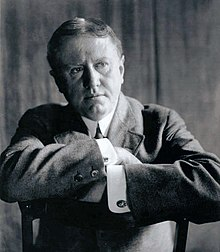

Chiếc lá cuối cùng (The Last Leaf) là một trong những truyện ngắn hay của nhà văn nổi tiếng người Mỹ O.Henry
Sue và Johnsy là hai nữ hoạ sĩ trẻ sống trong một khu nhà trọ.  Sống cùng với họ trong khu trọ đó là cụ Behrman, cũng là một họa sĩ. Mùa đông năm ấy, Johnsy bị bệnh sưng phổi rất nặng. Bệnh tật khiến cô cảm thấy tuyệt vọng. Mỗi lần nhìn ra cửa sổ, Johnsy luôn nghĩ rằng khi chiếc lá cuối cùng trên cây thường xuân trước cửa rơi xuống cũng là lúc cô lìa đời. Biết được ý nghĩ của Johnsy, cụ Behrman âm thầm thức suốt đêm mưa gió bão bùng để vẽ chiếc lá thường xuân. Chiếc lá khiến Johnsy có thêm nghị lực sống. Nhưng sau đêm đó, cụ Behrman lại qua đời. Xiu lặng lẽ đến bên Johnsy báo cho bạn về cái chết của cụ Behrman và bí mật của chiếc lá cuối cùng